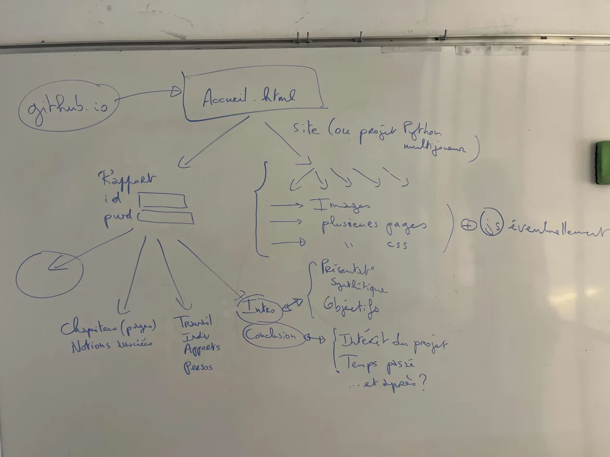
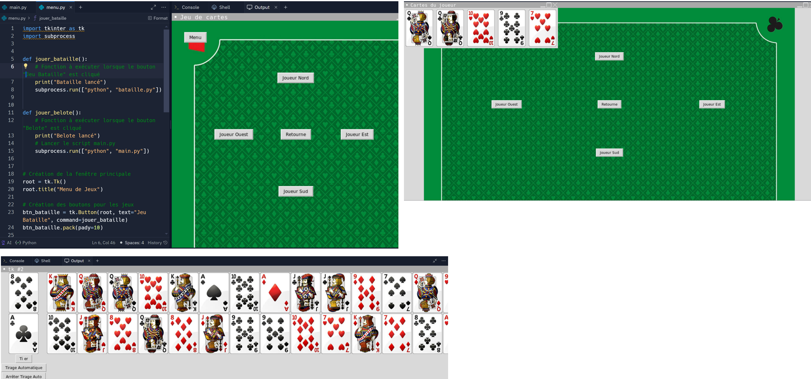

Dans le cadre du projet web, j'ai principalement pris en charge le déploiement du site via GitHub, l'esthétique de l'interface graphique à l’aide de CSS qu’on a étudié avec Avigdor, ainsi que la création de la page de connexion avec identifiant et mot de passe. Pour cela, je me suis appuyé sur le manuel (chapitres mentionnés ci-dessus) et sur le site https://karlosins.github.io/login.html, dont j'ai consulté le code source. Toutefois, l'accès à la page de connexion n'est pas totalement sécurisé et peut être facilement compromis en affichant le code source de la page.
Je me suis chargé de la refonte du CSS pour améliorer l'ergonomie du projet. J'ai également travaillé sur l'établissement des liens entre les différentes pages du site. Enfin je me suis occupé de faire des liens entre les chapitres du livre et le projet (pages chapitres).
Sur le projet web, je me suis essentiellement occupée de reprendre tous les codes et images depuis Discord. J'ai organisé le code pour structurer le projet sur Replit de manière cohérente. J'ai créé des dossiers dédiés pour les images afin de maintenir une organisation claire. Ensuite, j'ai passé en revue le code récupéré pour le nettoyer et le modulariser autant que possible. Sur Replit, j'ai téléversé tous les fichiers et configuré l'environnement pour m'assurer que toutes les références étaient correctes. J'ai développé les fonctionnalités principales et testé chaque partie pour m'assurer de leur bon fonctionnement. Enfin, j'ai ajouté des commentaires dans le code pour une meilleure compréhension.
